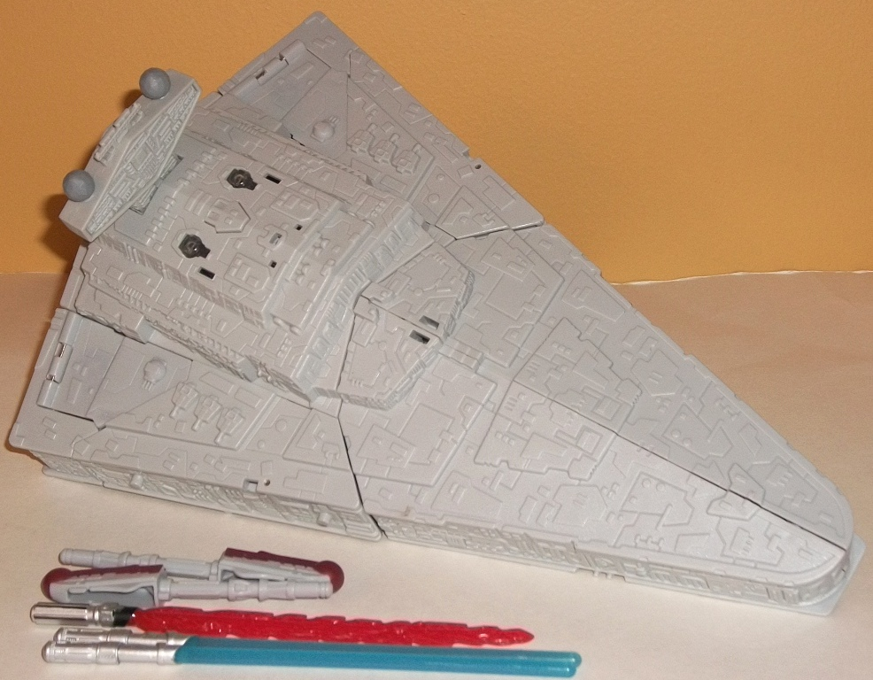
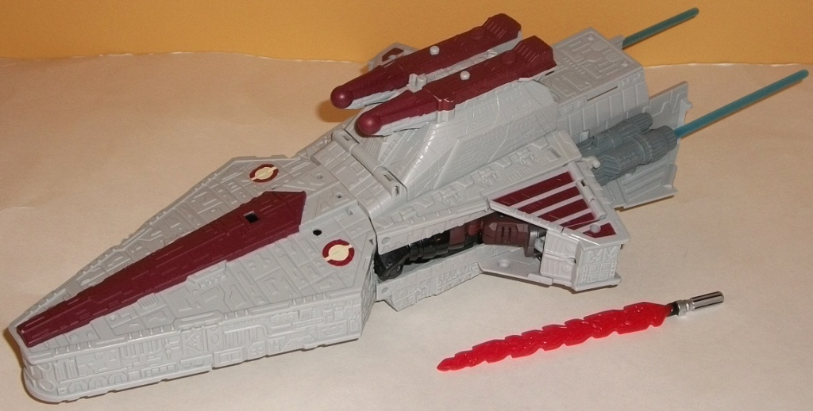
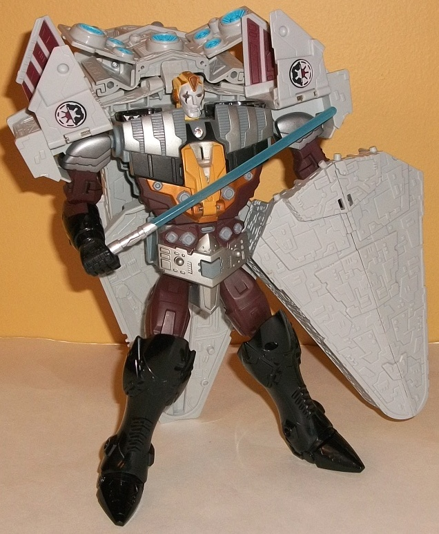
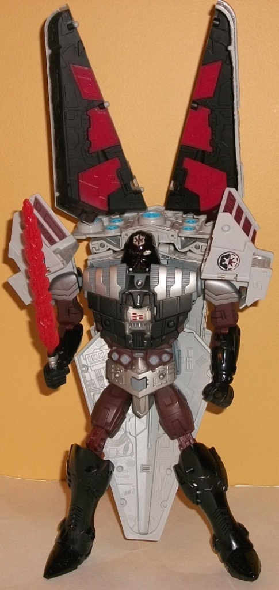

Price
: $40 U.S.
Difficulty of Transformation Between
Vehicle or Mech Modes
: Easy
Difficulty of Transformation from Vehicle
to Mech
: Medium
Color Scheme
: Greyish off-white,
dark dull maroon, black, and some dark brown, pale light yellow, moderately
light bluish gray, clear plastic, light electric blue, pasty yellow, metallic
copper, red, and orangish yellow
Rating
: 6.4


The third big-ticket
Star Wars Transformers item gets not just three, but FOUR different modes--
namely, two vehicle and two mech modes, each basically representing an
Anakin Skywalker and Darth Vader mech, which can convert from the "light
side" to the "dark side" or visa versa. It's a pretty cool idea. Instead
of reviewing each character seperately, I'll tackle both of the vehicle
modes and then switch to talking about the mech modes, since the two vehicle
and the two mech modes are quite similar to each other.
Representing the dark
side, the Star Destroyer-- at LONG last-- finally gets an appearance in
this line, and it's fittingly big-- you're definitely getting your $40
worth in terms of plastic weight, here. I don't really have much, comparatively,
to say about the Star Destroyer mode-- it's a big triangular gray hunk
of plastic. There's some gaps where the parts fit together, sure-- and
the front half can come undone if you REALLY shake the toy hard-- but generally
this is the most solid mode of the toy. There's pretty much no paint apps
beyond the light blue paint on the engines, but that's certainly movie-accurate--
and also fittingly movie accurate, there's an impressive amount of little
mech-like detailing all over this mode, culminating in the two-pronged
"tower" near the rear. Pressing on the button in between the two clear
plastic pieces will cause one of several sound effects to come out as the
clear bits blink red-- a laser firing sound; an "star engine roaring" sound,
and "You may fire when ready", in a clip from the movies. There's two big
downsides to this mode, though-- the biggest is that you can't sit this
mode flat on a surface. The underside of it is basically the Jedi Cruiser
mode, so the "tower" that comes out of the back of that other mode prevents
this. You have to lay the Destroyer on its side, a big bummer which makes
it considerably less photogenic. Also, this toy comes with FIVE large accessories
that cannot be stored in this mode-- two "normal" blue lightsabers, a flaring
red "evil" lightsaber, and two missiles for the Republic Attack Cruiser
mode. Theoretically you could store the missiles on the underside in this
mode in their launchers, but the buttons that fire them can become accidentally
triggered easily, given that they're right where the toy puts most of its
weight. Eesh.
Fortunately, in Republic
Attack Cruiser mode the toy CAN sit flat on a surface, but it's got other
problems. To summarize, this mode is basically the Star Destroyer mode
flipped over, with removable chunks taken out of the back-middle of the
figure and then relocated behind the engines. The shape is a bit more complex
than the Star Destroyer and it keeps the same awesome amount of mold detailing,
but adding some much-needed maroon paint along the center, top, and side
"wings" of the Cruiser, which makes it catch the eye a little more. Unfortunately,
there's a bit of mech mode extras this time, most obviously in the form
of the mech arms being very visible in the middle of the figure, now that
the side pieces have been taken out. Speaking of which, those side pieces
don't fit in very well at the back end at all, and the "shells" of the
Star Destroyer on each engine piece are pretty blatant. They're supposed
to extend the back end of the ship and clip in via small pegs to a flip-out
section, but the indentation in the back and the little pegs each tug on
the engine pieces a little too much-- try to connect each engine piece
to both, and they'll almost always come undone. This is REALLY annoying,
as this is the only way to make the back look solid. I recommend connecting
the pieces via the large indentation in the back, as it's more solid of
a connection, even if it won't line up exactly with its surrounding parts
this way. At least one cool feature that comes out of this is that the
blue lightsabers can now be stored-- push them into an open slot on the
back engine thrusters and they look like engine exhaust, which is a pretty
neat effect, even if it's been often done on previous SWTFs. Pressing on
the button on the relevant engine will fire the lightsaber out. Pressing
either of the buttons behind the two spring-loaded missile launchers on
the "tower" causes the relevant missile to fire, along with a blue light
on the front of the tower coming on and a sound effect coming out-- either
Anakin saying "We've got 'em right where we want 'em", a "missile firing"
sound (this one activates the blue light on the bottom of the figure, oddly
enough), Anakin saying "We're locked on! Transform!", Anakin saying "Engine
thrusters, full power!" followed by engine noises, or Anakin saying "Stay
on target!". The different-colored lights are cool, but they can be a bit
temperamental, the red lights often coming on instead of the blue, at least
in this mode.


In Anakin Skywalker's
mech mode, it's... well, honestly, it's a bit of a mess. The alt mode kibble
is everywhere-- he's holding the entire front half of the Star Destroyer
as a shield, for one, and it doesn't even stay clipped on to the port on
his lower arm all that solidly. Most of the back halves of BOTH modes are
folded behind his back, one on top of the other-- this makes him extremely
back heavy, as you can imagine, and very odd from any kind of angle that
isn't almost directly head-on. The removable engine pieces also just have
to sit this mode out, as they have nowhere to plug into here-- and the
missiles fire easily in their launchers again due to the back kibble pieces
sitting on top of them, so they're out, too. On the plus side, the rear
edges of the vehicle mode backsides make decent (if a bit overly buff)
shoulder pads, and the front top of the Star Cruiser mode makes for a decent
"armor skirt". The "core" mech mode proportions are good enough below the
waist, but above he gets a little malproportioned, with arms that aren't
long enough and a head that's too small for the very wide chest. That said,
the mold detailing is still excellent in this mode, with Anakin sporting
a version of his face that's more mechanized than on most SWTFs, and looks
pretty cool with that scar on one eye. The colors also get a bit more varied,
with dark brown and black serving as dark colors for the toy and silver
and some yellow forming a nice contrast against those colors. The chest
details look particularly good, in my opinion. As for articulation, Anakin
can move at the shoulders (at two points), elbows (at two points), and
at the wrists, hips (at two points), knees (at two points), and slightly
at the ankles. However, this seems better than it actually is-- due to
all the kibble and the back-heavyness of the toy, combined with the relatively
small feet for a toy this size, and it's very difficult to get Anakin to
stand on his own, much less in any great pose. Usually you have to aim
the skirt back and use that as a third leg to get him to stand. As for
sound effects, pressing in on the button on his waist causes a blue light
to come on in his stomach as well as (more temporarily) his face, and one
of several sound effects: a "lightsaber clashing" sound effect; Anakin
saying "The Sith will never transform me", Anakin saying "We've got 'em
right where we want 'em", or Anakin saying "You're no match for a Jedi
master!".
To go from Anakin Skywalker's
mech mode to Darth Vader's, it's very simple; you extend the legs downwards
a bit to make him a bit taller; you split the shield in half and attach
it to the top of his back shoulder kibble; and then, in a rather cool effect,
you pull down on the waist and flip the middle bits of the chest around
as one. As you do this and click the waist back up, halves of Darth Vader's
helmet-face flip up over Anakin's and the eyes and chest now glare red,
as you hear Darth Vader's characteristic "breath" sound emanate from the
toy. It's unquestionably the high point of the toy, and a very cool gimmick.
Unfortunately, you're still stuck with, essentially, the same kibbly mech
mode-- nearly all of my comments about Anakin's mech mode carry over to
Darth Vader's, minus a few things. For one, the head now looks slightly
more proportional to the chest, given that it's now Vader's head AROUND
Anakin's. The leg extension doesn't fare nearly as well, as the middle
bits now look too skinny in comparison to the upper and lower legs. Worst
of all, the shield bits are supposed to be on the already substantial backpack,
and although the red & black paint on the inside of said pieces looks
pretty cool, they're utterly humongous proportionally and don't really
look like anything-- they're just more kibble on a toy that desperately
needs to get rid of some. As for sound effects, pressing the button on
Vader's waist causes the red lights on his chest and head to light up as
he says one of the following: "Join me on the Dark Side", "Impressive.
Most impressive", "The Force is strong with you", "Release your anger and
complete your transformation", "I find your lack of faith disturbing",
"If you could be transformed, you would be a powerful ally", or a lightsaber
sound or two Vader breaths. Best of all, the red light tends to "beat"
on and off with Vader's sounds and breaths. (On a side note, transforming
Vader back to Anakin causes the blue lights to flare up again as Anakin
says, "I'm Anakin Skywalker, Jedi Knight".)
Overall, the Class III
Anakin/Vader transformer was a cool idea with a couple of cool gimmicks--
the way the toy switches between Anakin and Vader's mech modes is really
cool, and there's an impressive number of electronic sounds. With the exception
of not being able to sit flat on a surface, the Star Destroyer mode is
also pretty solid, and there's a pretty large amount of mold detailing
on the character. Unfortunately, that's about as far as the good points
go-- the Jedi Cruiser mode is considerably less solid-looking, and the
mech modes have an utterly ridiculous amount of kibble hanging off their
backs (not to mention extras that can't store in some of the modes, either).
Except for the Vader/Anakin change motion, there's nothing exceptionally
cool here. Only recommended for the biggest SWTF diehards, and easily the
worst big-ticket toy in the line.
Review by Beastbot